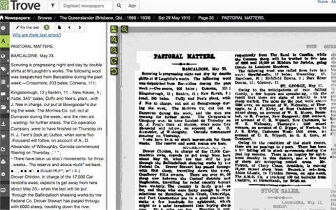
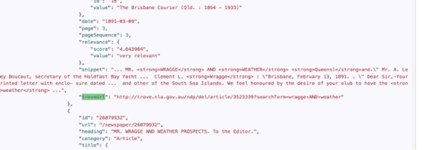
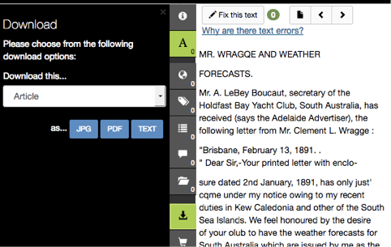
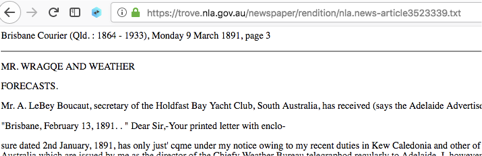
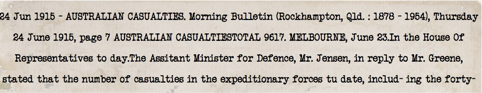

Then we hit the problem where the photos have no text on them. Being stubborn as I am, I decided to hack this thing together. So what have we got on the dataset for each row?
- title
- description
- a photo that has no text (if the link wasn’t broken)
Ok, maybe that’s enough to search up the newspaper article that contains that photo on some other website. Then I discovered Trove — the treasure trove that we needed. It has every single page of the Queenslander newspaper archived from 1866, and even has OCR’ed text:

Luckily Trove has an API that allows searching by keyword, and it returns a list of JSON objects including details of the matched articles:

The most useful bit is the troveUrl item. It leads us to the page above, where the article is displayed in all its splendour. But how do we get the text?
It seems like there’s a download button, which leads to the rendered text (in HTML form) of the article.


Now the challenge is to retrieve that text from the Trove URL, but in a program. It’s time for some magic. Notice that the URL of the article is:
https://trove.nla.gov.au/newspaper/article/3523339
and the URL of the text is:
https://trove.nla.gov.au/newspaper/rendition/nla.news-article3523339.txt
See how the number 3523339 is the same? That’s the id of the article. Get that, and the kingdom is ours.
The following PHP snippet is how I got the article id off the trove search results:
$troveResults = json_decode($troveResults, true);
$articleUrl = $troveResults["response"]["zone"][0]["records"]["article"][0]["url"];
//returns the string '/article/id'
$articleId = explode("/", $articleUrl)[2];
Now with the article id, we can pull the text down too:
$txtBaseUrl = "https://trove.nla.gov.au/newspaper/rendition/nla.news-article";
$txtUrl = $txtBaseUrl . $articleId . ".txt";
$article = strip_tags(file_get_contents($txtUrl));
And voilà!
